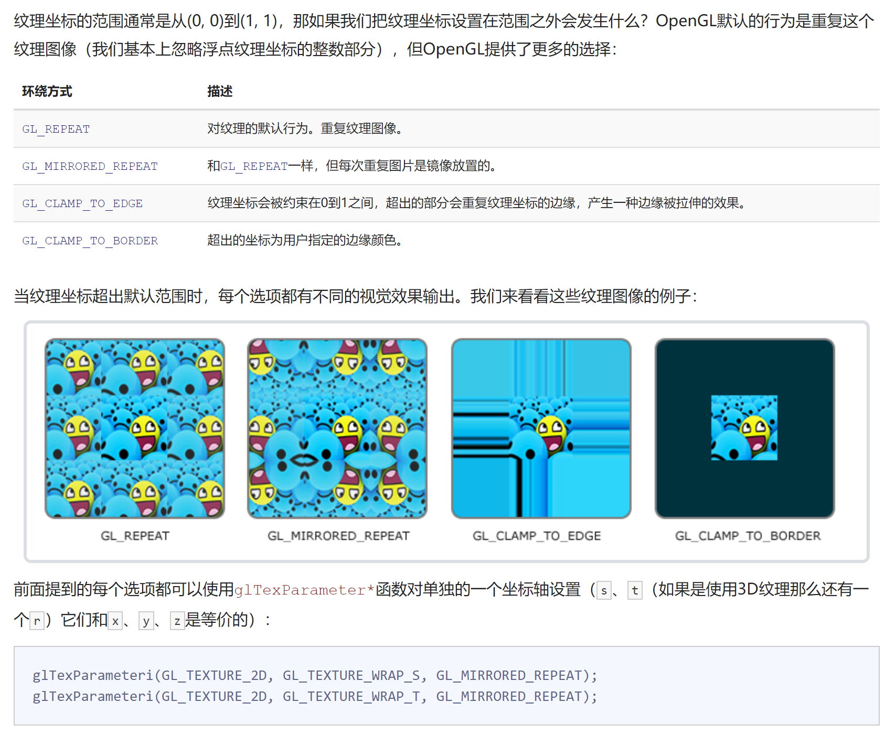
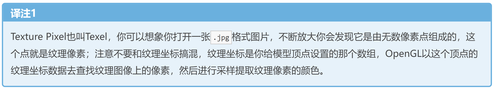
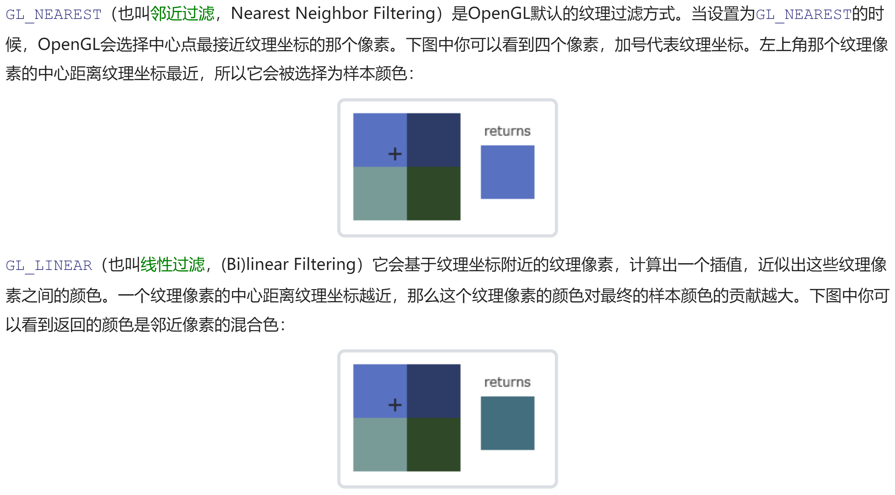
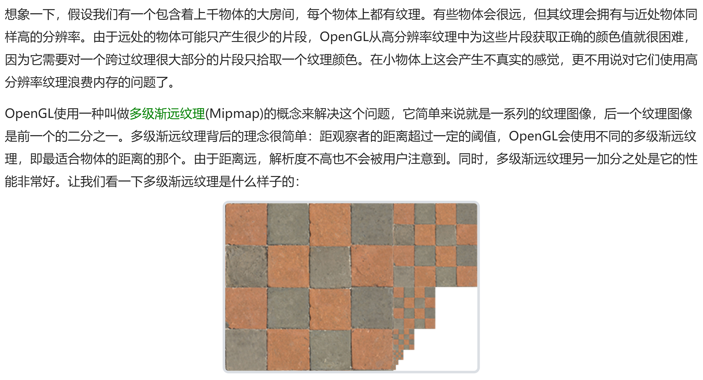
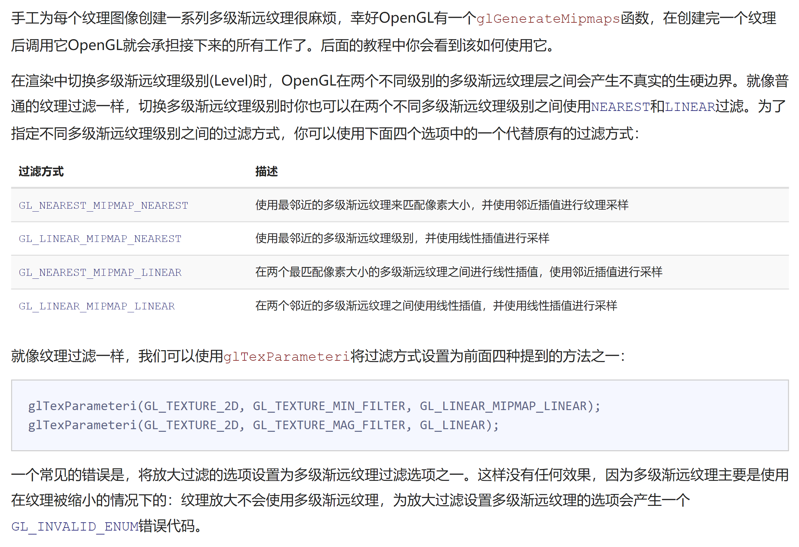

OpenGL_learning基础入门(1)
纹理
为了能够把纹理映射Map到三角形上，我们需要指定三角形的每个顶点各自对应纹理的哪个部分。这样每个顶点就会关联着一个纹理坐标Texture Coordinate，用来标明该从纹理图像的哪个部分采样译注：采集片段颜色。之后在图形的其它片段上进行片段插值Fragment Interpolation。
纹理环绕方式

纹理过滤
纹理坐标不依赖于分辨率Resolution，它可以是任意浮点值，所以OpenGL需要知道怎样将纹理像素Texture Pixel，也叫Texel映射到纹理坐标。当你有一个很大的物体但是纹理的分辨率很低的时候这就变得很重要了。OpenGL也有对于纹理过滤Texture Filtering的选项。纹理过滤有很多个选项，但是现在我们只讨论最重要的两种：GL_NEAREST和GL_LINEAR。


多级渐远纹理 MipMap


加载与创建纹理
使用stb_image.h库
纹理单元
你可能会奇怪为什么sampler2D变量是个uniform，我们却不用glUniform给它赋值。使用glUniform1i，我们可以给纹理采样器分配一个位置值，这样的话我们能够在一个片段着色器中设置多个纹理。一个纹理的位置值通常称为一个纹理单元Texture Unit。一个纹理的默认纹理单元是0，它是默认的激活纹理单元，所以教程前面部分我们没有分配一个位置值。
纹理单元的主要目的是让我们在着色器中可以使用多于一个的纹理。通过把纹理单元赋值给采样器，我们可以一次绑定多个纹理，只要我们首先激活对应的纹理单元。就像glBindTexture一样，我们可以使用glActiveTexture激活纹理单元，传入我们需要使用的纹理单元：
1 | glActiveTexture(GL_TEXTURE0); // 在绑定纹理之前先激活纹理单元 |
注：OpenGL至少保证有16个纹理单元供你使用，也就是说你可以激活从GL_TEXTURE0到GL_TEXTRUE15。它们都是按顺序定义的，所以我们也可以通过GL_TEXTURE0 + 8的方式获得GL_TEXTURE8，这在当我们需要循环一些纹理单元的时候会很有用。
GLM数学库来处理线性变换
(教程中重复了GAMES101的线性变换内容，故不再重复)
可以在定点着色器中声明一个mat4的uniform变量，然后再用矩阵uniform乘以位置向量
1 |
|
坐标系统
（相当于Games101 MVP矩阵和视口变换的一个总结）
*局部空间Local Space，或者称为物体空间Object Space
*世界空间World Space:物体经过Model矩阵
*观察空间View Space，或者称为视觉空间Eye Space:物体经过View矩阵
*裁剪空间Clip Space:物体经过Projection矩阵
如果只是图元，例如三角形，的一部分超出了裁剪体积，则OpenGL会重新构建这个三角形为一个或多个三角形让其能够适合这个裁剪范围。
1 | //正交投影（Frustum左，右，底，顶坐标，近平面距离，远平面距离） |
当你把透视矩阵的 near 值设置太大时（如10.0f），OpenGL会将靠近摄像机的坐标（在0.0f和10.0f之间）都裁剪掉，这会导致一个你在游戏中很熟悉的视觉效果：在太过靠近一个物体的时候你的视线会直接穿过去。
*屏幕空间Screen Space:经过视口变换
如何每次往定点着色器中传入不同的旋转矩阵
定点着色器格式
1 |
|
在渲染循环外还需要把矩阵传入着色器（这通常在每次的渲染迭代中进行，因为变换矩阵会经常变动）。
1 | int modelLoc = glGetUniformLocation(ourShader.ID, "model"); |
Z-Buffer
OpenGL存储它的所有深度信息于一个Z缓冲Z-buffer中，也被称为深度缓冲Depth Buffer。GLFW会自动为你生成这样一个缓冲就像它也有一个颜色缓冲来存储输出图像的颜色。深度值存储在每个片段里面作为片段的z值，当片段想要输出它的颜色时，OpenGL会将它的深度值和z缓冲进行比较，如果当前的片段在其它片段之后，它将会被丢弃，否则将会覆盖。这个过程称为深度测试Depth Testing，它是由OpenGL自动完成的。
深度测试默认是关闭的。我们可以通过glEnable函数来开启深度测试。glEnable和glDisable函数允许我们启用或禁用某个OpenGL功能。这个功能会一直保持启用/禁用状态，直到另一个调用来禁用/启用它。现在我们想启用深度测试，需要开启GL_DEPTH_TEST：
1 | glEnable(GL_DEPTH_TEST); |
因为我们使用了深度测试，我们也想要在每次渲染迭代之前清除深度缓冲否则前一帧的深度信息仍然保存在缓冲中。就像清除颜色缓冲一样，我们可以通过在glClear函数中指定DEPTH_BUFFER_BIT位来清除深度缓冲：
1 | glClear(GL_COLOR_BUFFER_BIT | GL_DEPTH_BUFFER_BIT); |
摄像机
- 摄像机位置
- 摄像机方向(z轴)
方向向量Direction Vector并不是最好的名字，因为它实际上指向从它到目标向量的相反方向。(即从摄像机目标到摄像机位置的向量)
1 | glm::vec3 cameraPos = glm::vec3(0.0f, 0.0f, 3.0f); |
- 右轴(Right Vector,x轴):定义上轴(y轴),叉乘得出
- 上轴
Look At矩阵
使用矩阵的好处之一是如果你使用3个相互垂直（或非线性）的轴定义了一个坐标空间，你可以用这3个轴外加一个平移向量来创建一个矩阵，并且你可以用这个矩阵乘以任何向量来将其变换到那个坐标空间。
幸运的是，GLM已经提供了这些支持。我们要做的只是定义一个摄像机位置，一个目标位置和一个表示世界空间中的上向量的向量(我们计算右向量使用的那个上向量)。接着GLM就会创建一个LookAt矩阵，我们可以把它当作我们的观察矩阵:
1 | glm::mat4 view; |
可以用键盘在每个渲染循环的开始不断移动摄像机的Pos从而更新View矩阵,键盘的移动只会改变lookat矩阵的位移部分，而不会改变角度的变，即不会改变相机的目标位置。
视角移动
欧拉角系统：俯仰角(Pitch)、偏航角(Yaw)和滚转角(Roll)
对于我们的摄像机系统来说，我们只关心俯仰角和偏航角，所以我们不会讨论滚转角。
通过在mian函数中注册一个鼠标移动的回调函数，函数内其实就是利用鼠标在屏幕上的每一帧在x，y轴上面的偏移量，乘上一个sensitivity灵敏度，把位移添加至Pitch、Yaw上。
1 | float xoffset = xpos - lastX; |
同时可以注册鼠标滚轮的回调函数来控制Projection函数中的Fov视域大小。
摄像机类
代码直接给出来了，可以自己看代码理解细节